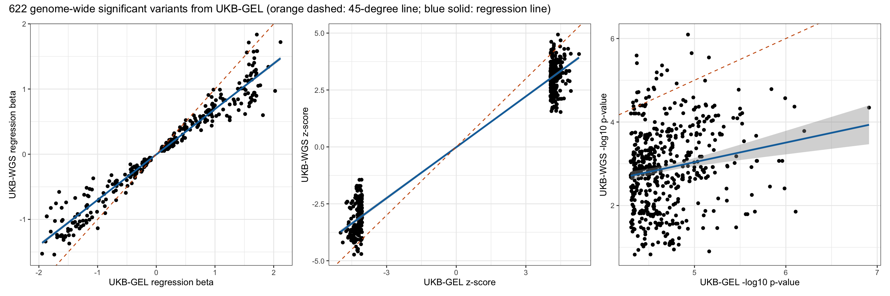
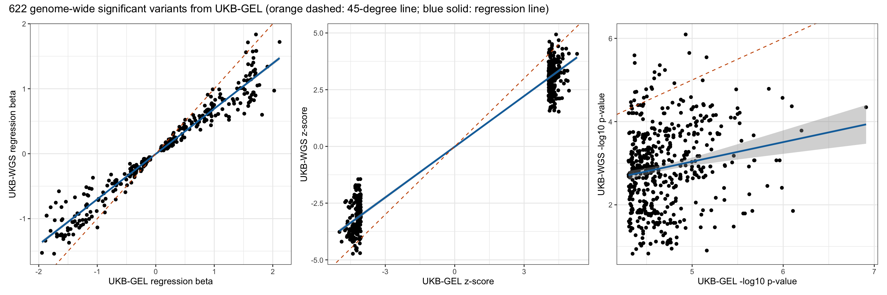
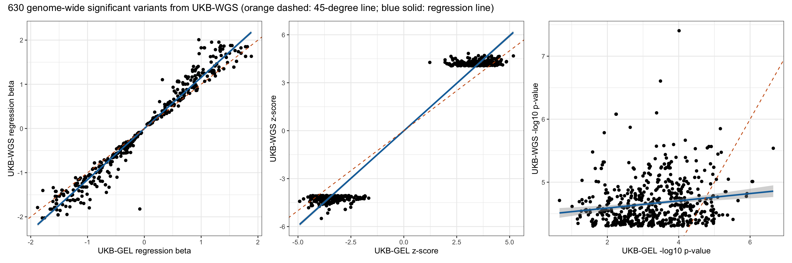
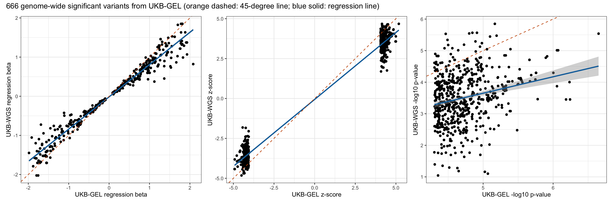

Compare GWAS results on the same trait from two versions of input data files
Xiang Zhu, Ph.D.
First created on 2025-04-04; Last modified on 2025-07-27
Last updated: 2025-07-27
Checks: 7 0
Knit directory: scratch/
This reproducible R Markdown analysis was created with workflowr (version 1.7.1). The Checks tab describes the reproducibility checks that were applied when the results were created. The Past versions tab lists the development history.
Great! Since the R Markdown file has been committed to the Git repository, you know the exact version of the code that produced these results.
Great job! The global environment was empty. Objects defined in the global environment can affect the analysis in your R Markdown file in unknown ways. For reproduciblity it’s best to always run the code in an empty environment.
The command set.seed(20250402) was run prior to running
the code in the R Markdown file. Setting a seed ensures that any results
that rely on randomness, e.g. subsampling or permutations, are
reproducible.
Great job! Recording the operating system, R version, and package versions is critical for reproducibility.
Nice! There were no cached chunks for this analysis, so you can be confident that you successfully produced the results during this run.
Great job! Using relative paths to the files within your workflowr project makes it easier to run your code on other machines.
Great! You are using Git for version control. Tracking code development and connecting the code version to the results is critical for reproducibility.
The results in this page were generated with repository version 7ff8974. See the Past versions tab to see a history of the changes made to the R Markdown and HTML files.
Note that you need to be careful to ensure that all relevant files for
the analysis have been committed to Git prior to generating the results
(you can use wflow_publish or
wflow_git_commit). workflowr only checks the R Markdown
file, but you know if there are other scripts or data files that it
depends on. Below is the status of the Git repository when the results
were generated:
Ignored files:
Ignored: .DS_Store
Ignored: .Rhistory
Ignored: .Rproj.user/
Note that any generated files, e.g. HTML, png, CSS, etc., are not included in this status report because it is ok for generated content to have uncommitted changes.
These are the previous versions of the repository in which changes were
made to the R Markdown
(analysis/compare_wgs_with_gel_b04_rep.Rmd) and HTML
(docs/compare_wgs_with_gel_b04_rep.html) files. If you’ve
configured a remote Git repository (see ?wflow_git_remote),
click on the hyperlinks in the table below to view the files as they
were in that past version.
| File | Version | Author | Date | Message |
|---|---|---|---|---|
| Rmd | 7ff8974 | Xiang Zhu | 2025-07-27 | compare wgs-based xiangzhu/brain2gene#14 with gel-based xiangzhu/brain2gene#2 results in replication xiangzhu/brain2gene#7 |
UKB-WGS DCF I2 vs UKB-GEL NOT I2
Overview of two GWAS for comparison
Number of rows in the new data frame: 21635515 Number of rows in the old data frame: 16660749 Number of genome-wide significant variants in the new GWAS: 0 Number of genome-wide significant variants in the old GWAS: 0 Number of GWAS loci in the new GWAS: 0 Number of GWAS loci in the old GWAS: 0 Relaxed genome-wide significant threshold: 4.30103 Total number of rows after joining two data frames: 16440958 Comparison across all variants
Pearson correlation between new_A1FREQ in new and old_A1FREQ in old:
Estimate = 0.99989304 , 95% CI = [ 0.99989294 , 0.99989315 ]
Regression coefficients for new_A1FREQ (new ~ old):
Estimate Std. Error t value Pr(>|t|)
(Intercept) 3.170457e-05 9.860837e-07 32.152 8.416921e-227
x 9.998095e-01 3.606696e-06 277209.223 0.000000e+00
Pearson correlation between new_BETA in new and old_BETA in old:
Estimate = 0.7289803 , 95% CI = [ 0.72875372 , 0.72920673 ]
Regression coefficients for new_BETA (new ~ old):
Estimate Std. Error t value Pr(>|t|)
(Intercept) 0.0002939983 3.169062e-05 9.277138 1.741124e-20
x 0.7289352056 1.688127e-04 4318.012343 0.000000e+00
Pearson correlation between new_SE in new and old_SE in old:
Estimate = 0.99360689 , 95% CI = [ 0.99360073 , 0.99361305 ]
Regression coefficients for new_SE (new ~ old):
Estimate Std. Error t value Pr(>|t|)
(Intercept) 0.001483375 5.226401e-06 283.8234 0
x 0.967451668 2.710984e-05 35686.3682 0
Pearson correlation between new_CHISQ in new and old_CHISQ in old:
Estimate = 0.56111884 , 95% CI = [ 0.56078756 , 0.56144993 ]
Regression coefficients for new_CHISQ (new ~ old):
Estimate Std. Error t value Pr(>|t|)
(Intercept) 0.4437603 0.0003536622 1254.758 0
x 0.5851853 0.0002128955 2748.697 0
Pearson correlation between new_LOG10P in new and old_LOG10P in old:
Estimate = 0.55173559 , 95% CI = [ 0.55139927 , 0.55207173 ]
Regression coefficients for new_LOG10P (new ~ old):
Estimate Std. Error t value Pr(>|t|)
(Intercept) 0.1954027 0.0001264570 1545.210 0
x 0.5705368 0.0002126988 2682.369 0
Pearson correlation between new_ZSCORE in new and old_ZSCORE in old:
Estimate = 0.74455414 , 95% CI = [ 0.74433865 , 0.74476947 ]
Regression coefficients for new_ZSCORE (new ~ old):
Estimate Std. Error t value Pr(>|t|)
(Intercept) 0.001095759 0.0001648263 6.647961 2.971901e-11
x 0.762982913 0.0001687123 4522.391466 0.000000e+00Comparison across genome-wide significant variants from UKB-WGS
Pearson correlation between new_A1FREQ in new and old_A1FREQ in old:
Estimate = 0.99999391 , 95% CI = [ 0.99999303 , 0.99999468 ]
Regression coefficients for new_A1FREQ (new ~ old):
Estimate Std. Error t value Pr(>|t|)
(Intercept) -0.0002830715 2.752246e-05 -10.28511 1.875621e-23
x 1.0000117733 1.202635e-04 8315.17048 0.000000e+00
Pearson correlation between new_BETA in new and old_BETA in old:
Estimate = 0.98110193 , 95% CI = [ 0.97839634 , 0.98347152 ]
Regression coefficients for new_BETA (new ~ old):
Estimate Std. Error t value Pr(>|t|)
(Intercept) 0.02199154 0.005230711 4.204311 2.899061e-05
x 1.30589930 0.008875679 147.132324 0.000000e+00
Pearson correlation between new_SE in new and old_SE in old:
Estimate = 0.99331573 , 95% CI = [ 0.99235201 , 0.99415837 ]
Regression coefficients for new_SE (new ~ old):
Estimate Std. Error t value Pr(>|t|)
(Intercept) 0.002416574 0.0007281187 3.318929 0.0009424396
x 0.957580310 0.0038348356 249.705698 0.0000000000
Pearson correlation between new_CHISQ in new and old_CHISQ in old:
Estimate = 0.10539679 , 95% CI = [ 0.03818613 , 0.17165813 ]
Regression coefficients for new_CHISQ (new ~ old):
Estimate Std. Error t value Pr(>|t|)
(Intercept) 17.9641597 0.2059444 87.228193 0.000000000
x 0.0561636 0.0182619 3.075453 0.002169733
Pearson correlation between new_LOG10P in new and old_LOG10P in old:
Estimate = 0.11004261 , 95% CI = [ 0.04287877 , 0.17621629 ]
Regression coefficients for new_LOG10P (new ~ old):
Estimate Std. Error t value Pr(>|t|)
(Intercept) 4.61729652 0.05381352 85.801785 0.000000000
x 0.05625078 0.01750919 3.212643 0.001365182
Pearson correlation between new_ZSCORE in new and old_ZSCORE in old:
Estimate = 0.98275405 , 95% CI = [ 0.98028263 , 0.98491806 ]
Regression coefficients for new_ZSCORE (new ~ old):
Estimate Std. Error t value Pr(>|t|)
(Intercept) 0.1545145 0.027480721 5.622653 2.558044e-08
x 1.2998528 0.008428908 154.213681 0.000000e+00Comparison across genome-wide significant variants from UKB-GEL
Pearson correlation between new_A1FREQ in new and old_A1FREQ in old:
Estimate = 0.99993152 , 95% CI = [ 0.99991983 , 0.9999415 ]
Regression coefficients for new_A1FREQ (new ~ old):
Estimate Std. Error t value Pr(>|t|)
(Intercept) 4.544422e-05 0.0001351884 0.3361548 0.7368678
x 1.000040e+00 0.0004700595 2127.4747980 0.0000000
Pearson correlation between new_BETA in new and old_BETA in old:
Estimate = 0.97543431 , 95% CI = [ 0.97130244 , 0.97897762 ]
Regression coefficients for new_BETA (new ~ old):
Estimate Std. Error t value Pr(>|t|)
(Intercept) -0.004215591 0.005062436 -0.8327197 0.4053235
x 0.697147926 0.006323053 110.2549479 0.0000000
Pearson correlation between new_SE in new and old_SE in old:
Estimate = 0.99485747 , 95% CI = [ 0.99398256 , 0.99560545 ]
Regression coefficients for new_SE (new ~ old):
Estimate Std. Error t value Pr(>|t|)
(Intercept) -0.000283146 0.0007598644 -0.372627 0.7095534
x 0.991180860 0.0040526649 244.575084 0.0000000
Pearson correlation between new_CHISQ in new and old_CHISQ in old:
Estimate = 0.17902757 , 95% CI = [ 0.10184593 , 0.25406681 ]
Regression coefficients for new_CHISQ (new ~ old):
Estimate Std. Error t value Pr(>|t|)
(Intercept) 2.1689263 1.823990 1.189111 2.348512e-01
x 0.4553065 0.100488 4.530952 7.045931e-06
Pearson correlation between new_LOG10P in new and old_LOG10P in old:
Estimate = 0.17693687 , 95% CI = [ 0.09970877 , 0.25204598 ]
Regression coefficients for new_LOG10P (new ~ old):
Estimate Std. Error t value Pr(>|t|)
(Intercept) 0.6987851 0.4901744 1.425585 1.544915e-01
x 0.4680583 0.1045632 4.476319 9.038356e-06
Pearson correlation between new_ZSCORE in new and old_ZSCORE in old:
Estimate = 0.9797081 , 95% CI = [ 0.97628644 , 0.98264039 ]
Regression coefficients for new_ZSCORE (new ~ old):
Estimate Std. Error t value Pr(>|t|)
(Intercept) -0.01434067 0.026018265 -0.551177 0.5817109
x 0.74465474 0.006118209 121.711228 0.0000000Overlap of genome-wide significant variants between two GWAS
UKB-WGS p < 5e-8 UKB-WGS p >= 5e-8
UKB-GEL p < 5e-8 48 574
UKB-GEL p >= 5e-8 796 16439540
Fisher's Exact Test for Count Data
data: contingency_table
p-value < 2.2e-16
alternative hypothesis: true odds ratio is not equal to 1
95 percent confidence interval:
1204.706 2474.924
sample estimates:
odds ratio
1721.859 Visualization of comparison
 

UKB-WGS DCF I3 vs UKB-GEL NOT I3
Overview of two GWAS for comparison
Number of rows in the new data frame: 21761851 Number of rows in the old data frame: 16745942 Number of genome-wide significant variants in the new GWAS: 1 Number of genome-wide significant variants in the old GWAS: 0 Number of GWAS loci in the new GWAS: 1 Number of GWAS loci in the old GWAS: 0 Relaxed genome-wide significant threshold: 4.30103 Total number of rows after joining two data frames: 16523919 Comparison across all variants
Pearson correlation between new_A1FREQ in new and old_A1FREQ in old:
Estimate = 0.99989243 , 95% CI = [ 0.99989233 , 0.99989253 ]
Regression coefficients for new_A1FREQ (new ~ old):
Estimate Std. Error t value Pr(>|t|)
(Intercept) 0.0000322208 9.842526e-07 32.73631 4.839145e-235
x 0.9998003984 3.607865e-06 277116.92295 0.000000e+00
Pearson correlation between new_BETA in new and old_BETA in old:
Estimate = 0.80274241 , 95% CI = [ 0.80257088 , 0.8029138 ]
Regression coefficients for new_BETA (new ~ old):
Estimate Std. Error t value Pr(>|t|)
(Intercept) 0.0003180275 2.780502e-05 11.43777 2.708221e-30
x 0.7884386640 1.440850e-04 5472.03679 0.000000e+00
Pearson correlation between new_SE in new and old_SE in old:
Estimate = 0.99366431 , 95% CI = [ 0.99365821 , 0.99367039 ]
Regression coefficients for new_SE (new ~ old):
Estimate Std. Error t value Pr(>|t|)
(Intercept) 0.001427974 5.24128e-06 272.4475 0
x 0.957028054 2.66288e-05 35939.5856 0
Pearson correlation between new_CHISQ in new and old_CHISQ in old:
Estimate = 0.67238572 , 95% CI = [ 0.67212146 , 0.67264981 ]
Regression coefficients for new_CHISQ (new ~ old):
Estimate Std. Error t value Pr(>|t|)
(Intercept) 0.3282891 0.0003148745 1042.603 0
x 0.6940654 0.0001879642 3692.541 0
Pearson correlation between new_LOG10P in new and old_LOG10P in old:
Estimate = 0.66469135 , 95% CI = [ 0.66442213 , 0.6649604 ]
Regression coefficients for new_LOG10P (new ~ old):
Estimate Std. Error t value Pr(>|t|)
(Intercept) 0.1449470 0.0001129344 1283.461 0
x 0.6817167 0.0001885023 3616.490 0
Pearson correlation between new_ZSCORE in new and old_ZSCORE in old:
Estimate = 0.81906072 , 95% CI = [ 0.81890196 , 0.81921936 ]
Regression coefficients for new_ZSCORE (new ~ old):
Estimate Std. Error t value Pr(>|t|)
(Intercept) 0.001289585 0.0001411044 9.13923 6.290523e-20
x 0.832662445 0.0001434784 5803.40101 0.000000e+00Comparison across genome-wide significant variants from UKB-WGS
Pearson correlation between new_A1FREQ in new and old_A1FREQ in old:
Estimate = 0.99994324 , 95% CI = [ 0.99993362 , 0.99995147 ]
Regression coefficients for new_A1FREQ (new ~ old):
Estimate Std. Error t value Pr(>|t|)
(Intercept) -0.0001573399 0.0001012066 -1.554641 0.1205354
x 0.9997405780 0.0004250611 2351.992849 0.0000000
Pearson correlation between new_BETA in new and old_BETA in old:
Estimate = 0.98269548 , 95% CI = [ 0.97979259 , 0.98518448 ]
Regression coefficients for new_BETA (new ~ old):
Estimate Std. Error t value Pr(>|t|)
(Intercept) -0.001704517 0.007211103 -0.236374 0.8132195
x 1.156915049 0.008701827 132.950828 0.0000000
Pearson correlation between new_SE in new and old_SE in old:
Estimate = 0.98634353 , 95% CI = [ 0.98404769 , 0.98831091 ]
Regression coefficients for new_SE (new ~ old):
Estimate Std. Error t value Pr(>|t|)
(Intercept) 0.003018632 0.001502506 2.009064 0.04495776
x 0.962671927 0.006414557 150.076143 0.00000000
Pearson correlation between new_CHISQ in new and old_CHISQ in old:
Estimate = 0.16618766 , 95% CI = [ 0.08923207 , 0.24117084 ]
Regression coefficients for new_CHISQ (new ~ old):
Estimate Std. Error t value Pr(>|t|)
(Intercept) 17.31795782 0.18379820 94.222673 0.000000e+00
x 0.05940835 0.01406654 4.223381 2.762878e-05
Pearson correlation between new_LOG10P in new and old_LOG10P in old:
Estimate = 0.16602347 , 95% CI = [ 0.08906457 , 0.24101181 ]
Regression coefficients for new_LOG10P (new ~ old):
Estimate Std. Error t value Pr(>|t|)
(Intercept) 4.47431999 0.04765043 93.89884 0.000000e+00
x 0.05761972 0.01365691 4.21909 2.814496e-05
Pearson correlation between new_ZSCORE in new and old_ZSCORE in old:
Estimate = 0.98328999 , 95% CI = [ 0.98048585 , 0.9856941 ]
Regression coefficients for new_ZSCORE (new ~ old):
Estimate Std. Error t value Pr(>|t|)
(Intercept) -0.01133219 0.03087167 -0.3670742 0.7136874
x 1.18986997 0.00879062 135.3567810 0.0000000Comparison across genome-wide significant variants from UKB-GEL
Pearson correlation between new_A1FREQ in new and old_A1FREQ in old:
Estimate = 0.99999761 , 95% CI = [ 0.99999722 , 0.99999795 ]
Regression coefficients for new_A1FREQ (new ~ old):
Estimate Std. Error t value Pr(>|t|)
(Intercept) -0.0000626493 3.165873e-05 -1.978895 0.04824058
x 1.0006152866 8.487106e-05 11789.829149 0.00000000
Pearson correlation between new_BETA in new and old_BETA in old:
Estimate = 0.98019132 , 95% CI = [ 0.97697155 , 0.98296479 ]
Regression coefficients for new_BETA (new ~ old):
Estimate Std. Error t value Pr(>|t|)
(Intercept) -0.01556426 0.005478278 -2.841086 0.004633854
x 0.82458852 0.006465822 127.530343 0.000000000
Pearson correlation between new_SE in new and old_SE in old:
Estimate = 0.99328639 , 95% CI = [ 0.99218674 , 0.99423172 ]
Regression coefficients for new_SE (new ~ old):
Estimate Std. Error t value Pr(>|t|)
(Intercept) 0.0007679404 0.0008730021 0.8796547 0.3793646
x 0.9734801285 0.0043997844 221.2563268 0.0000000
Pearson correlation between new_CHISQ in new and old_CHISQ in old:
Estimate = 0.24551709 , 95% CI = [ 0.1727676 , 0.31560236 ]
Regression coefficients for new_CHISQ (new ~ old):
Estimate Std. Error t value Pr(>|t|)
(Intercept) 3.7231379 1.44548491 2.575702 1.021880e-02
x 0.5086115 0.07793275 6.526288 1.338689e-10
Pearson correlation between new_LOG10P in new and old_LOG10P in old:
Estimate = 0.24513998 , 95% CI = [ 0.1723783 , 0.31524103 ]
Regression coefficients for new_LOG10P (new ~ old):
Estimate Std. Error t value Pr(>|t|)
(Intercept) 1.0482555 0.38169960 2.746284 6.190752e-03
x 0.5205098 0.07988643 6.515622 1.431213e-10
Pearson correlation between new_ZSCORE in new and old_ZSCORE in old:
Estimate = 0.99084104 , 95% CI = [ 0.98934299 , 0.99212933 ]
Regression coefficients for new_ZSCORE (new ~ old):
Estimate Std. Error t value Pr(>|t|)
(Intercept) -0.05752145 0.019062358 -3.017541 0.00264586
x 0.83856004 0.004434939 189.080411 0.00000000Overlap of genome-wide significant variants between two GWAS
UKB-WGS p < 5e-8 UKB-WGS p >= 5e-8
UKB-GEL p < 5e-8 103 563
UKB-GEL p >= 5e-8 527 16522726
Fisher's Exact Test for Count Data
data: contingency_table
p-value < 2.2e-16
alternative hypothesis: true odds ratio is not equal to 1
95 percent confidence interval:
4201.026 8192.000
sample estimates:
odds ratio
4896.349 Visualization of comparison

R version 4.5.1 (2025-06-13)
Platform: aarch64-apple-darwin20
Running under: macOS Sequoia 15.5
Matrix products: default
BLAS: /Library/Frameworks/R.framework/Versions/4.5-arm64/Resources/lib/libRblas.0.dylib
LAPACK: /Library/Frameworks/R.framework/Versions/4.5-arm64/Resources/lib/libRlapack.dylib; LAPACK version 3.12.1
locale:
[1] en_US.UTF-8/en_US.UTF-8/en_US.UTF-8/C/en_US.UTF-8/en_US.UTF-8
time zone: America/Los_Angeles
tzcode source: internal
attached base packages:
[1] stats graphics grDevices utils datasets methods base
other attached packages:
[1] xzTools_0.0.0.9000 patchwork_1.3.1 ggplot2_3.5.2 dplyr_1.1.4
[5] data.table_1.17.8 workflowr_1.7.1
loaded via a namespace (and not attached):
[1] sass_0.4.10 generics_0.1.4 lattice_0.22-7 stringi_1.8.7
[5] digest_0.6.37 magrittr_2.0.3 evaluate_1.0.4 grid_4.5.1
[9] RColorBrewer_1.1-3 fastmap_1.2.0 Matrix_1.7-3 R.oo_1.27.1
[13] rprojroot_2.0.4 jsonlite_2.0.0 processx_3.8.6 R.utils_2.13.0
[17] whisker_0.4.1 ps_1.9.1 promises_1.3.3 httr_1.4.7
[21] mgcv_1.9-3 scales_1.4.0 jquerylib_0.1.4 cli_3.6.5
[25] rlang_1.1.6 R.methodsS3_1.8.2 splines_4.5.1 withr_3.0.2
[29] cachem_1.1.0 yaml_2.3.10 tools_4.5.1 httpuv_1.6.16
[33] vctrs_0.6.5 R6_2.6.1 lifecycle_1.0.4 git2r_0.36.2
[37] stringr_1.5.1 fs_1.6.6 pkgconfig_2.0.3 callr_3.7.6
[41] pillar_1.11.0 bslib_0.9.0 later_1.4.2 gtable_0.3.6
[45] glue_1.8.0 Rcpp_1.1.0 xfun_0.52 tibble_3.3.0
[49] tidyselect_1.2.1 rstudioapi_0.17.1 knitr_1.50 farver_2.1.2
[53] nlme_3.1-168 htmltools_0.5.8.1 labeling_0.4.3 rmarkdown_2.29
[57] compiler_4.5.1 getPass_0.2-4